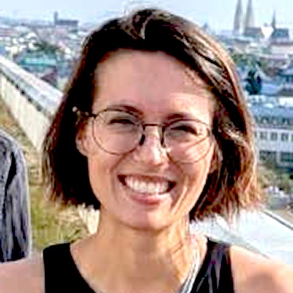

Spacesfor people.
Hello, I am Chris. I work between scientific discovery, engineering invention and the making of spaces. Trained as an architect and a bioengineer, I build human–data interfaces for network medicine: 3D network layouts, virtual reality, sculptures and exhibitions.
My work doesn't fit one category. It moves between disciplines and borrows their methods, so a dataset can become a room, a sculpture can become a research question, and an exhibition can become an instrument for thinking.
- Project · click to open
- Institute or venue
- Concept: what mattered in a project
- Project involves this concept
- Project happened at this institute
- Group, set by “Cluster by”
Projects that share a concept or an institute are related. Hover a node for details.
About

Chris Hütter is a PhD candidate in Jörg Menche's group at the Ludwig Boltzmann Institute for Network Medicine at the University of Vienna. Her research asks how the space around us can help us think with high-dimensional data: layouts that encode meaning into position, and immersive environments where people explore networks with their bodies.
She trained as an architect in Vienna and Glasgow, worked with Tomás Saraceno Studio and on hospital buildings, then moved into bioengineering and network science. Alongside research she co-leads the institute's workshop, curates, and teaches.
Education, positions, exhibitions, talks and publications.
Open CV (PDF) ↗Links
christiane.huetter@univie.ac.at
Impressum
Offenlegung gemäß § 25 Mediengesetz
- Medieninhaberin & verantwortlich für den Inhalt
- Christiane V. R. Hütter
- Wohnort
- Wien, Österreich
- christiane.huetter@univie.ac.at
- Grundlegende Richtung
- Persönliche Website: Darstellung der wissenschaftlichen, künstlerischen und kuratorischen Arbeit der Medieninhaberin.
Media
Images, illustrations and videos are by the author or by LBI-NetMed unless stated otherwise; photographers are credited on each image. Project descriptions refer to collaborative work carried out with the Menche Lab at LBI-NetMed and the partners named.
Privacy
This site sets no cookies, uses no analytics or tracking, and loads no third-party content: fonts and images are served from this site. Links to other websites open those sites, which have their own privacy policies. The hosting provider may keep technical access logs (such as IP address and time of access) as required to operate the server.
Liability
Content was prepared with care, but no guarantee is given for completeness or currency. The author is not responsible for the content of external links.